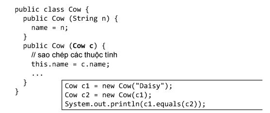

Ta đã biết rằng không thể dùng phép gán để sao chép nội dung đối tượng, nó chỉ sao chép nội dung biến tham chiếu. Vậy làm thế nào để tạo đối tượng mới là bản sao của một đối tượng có sẵn?
Có hai kiểu sao chép nông (shallow copy) và sao chép sâu (deep copy). Sao chép nông là sao chép từng bit của các biến thực thể. Đối tượng mới sẽ có các biến thực thể có giá trị bằng các biến tương ứng của đối tượng cũ, kể cả các biến thực thể là tham chiếu. Do đó, nếu đối tượng cũ có một tham chiếu tới một đối tượng khác thì đối tượng mới cũng có tham chiếu tới chính đối tượng đó. Đôi khi, đây là kết quả đúng. Chẳng hạn như khi ta tạo bản sao của một đối tượng Account (tài khoản ngân hàng), cả hai tài khoản mới và cũ đều có chung một chủ sở hữu tài khoản, nghĩa là biến thực thể owner của hai đối tượng này đều chiếu tới cùng một đối tượng Customer (khách hàng) – người sở hữu tài khoản.
Trong những trường hợp khác, ta muốn tạo bản sao của cả các đối tượng thành phần. Sao chép sâu tạo bản sao hoàn chỉnh của một đối tượng có sẵn. Chẳng hạn, khi thực hiện sao chép sâu đối với một đối tượng là danh sách chứa các đối tượng khác, kết quả là các đối tượng thành phần cũng được tạo bản sao hoàn toàn. Ta được đối tượng danh sách mới chứa các đối tượng thành phần mới, tách biệt hoàn toàn với danh sách cũ (thay vì tình trạng các đối tượng thành phần đồng thời nằm trong cả hai danh sách cũ và mới). Lấy ví dụ khác: một căn hộ có nhiều phòng, mỗi phòng có các đồ đạc nội thất. Khi tạo bản sao của một căn hộ, nhằm tạo ra một căn hộ khác giống hệt căn hộ ban đầu, ta phải sao chép cả các phòng cũng như tất cả đồ đạc nội thất chứa trong đó. Không phải tình trạng hai căn hộ nhưng lại có chung các phòng và chung nội thất. Để có được kiểu sao chép hoàn toàn này, lập trình viên phải tự cài đặt quy trình sao chép.
Java có hỗ trợ sao chép nông và sao chép sâu với phương thức clone và interface Cloneable. Tuy nhiên, nhiều chuyên gia, trong đó có Joshua Bloch – tác giả cuốn Effective Java [7], khuyên không nên sử dụng hỗ trợ này do nó có lỗi thiết kế và hiệu lực thực thi không ổn định, thay vào đó, nên dùng hàm khởi tạo sao chép.
Hàm khởi tạo sao chép (copy constructor) là hàm khởi tạo với tham số duy nhất là một tham chiếu đối tượng và hàm này sẽ khởi tạo đối tượng mới sao cho có nội dung giống hệt đối tượng đã cho. Chẳng hạn:
Trong đó, nội dung hàm khởi tạo Cow(Cow c) làm nhiệm vụ sao chép nội dung của đối tượng c vào đối tượng vừa tạo, ở đây chỉ là các phép gán giá trị cho các biến thực thể. Tuy nhiên, khi có quan hệ thừa kế, tình huống không phải lúc nào cũng đơn giản như ví dụ đó.
Xét quan hệ thừa kế giữa Animal và Cat. Ta viết hàm khởi tạo sao chép cho cả hai lớp. Giả sử ta cần một tình huống đa hình chẳng hạn như một đoạn mã áp dụng cho các loại Animal nói chung, trong đó có Cat. Trong phương thức đó ta cần nhân bản các đối tượng mà không biết chúng thuộc lớp nào trong cây thừa kế Animal, chẳng hạn:
Liệu trong tình huống này ta có thể dùng hàm khởi tạo sao chép của Animal để nhân bản các đối tượng thuộc các lớp con? Ta hãy thử xem.
Ví dụ trong Hình 9.10 cho thấy câu trả lời là 'không thể'. Khi ta dùng lệnh new Animal(tom) gọi hàm khởi tạo sao chép nhằm tạo một bản sao của mèo Tom, thực ra ta đang tạo đối tượng Animal và dùng hàm khởi tạo của lớp Animal (nhớ lại rằng giữa các hàm khởi tạo không có quan hệ thừa kế do đó cũng không có đa hình). Cho nên kết quả của thao tác sao chép thứ hai không phải là một đối tượng mèo tên Tom mà là một đối tượng Animal tên Tom (phiên bản makeNoise() chạy cho đối tượng này in ra "Huh?" – đây là phiên bản của Animal chứ không phải phiên bản của Cat).
Như vậy sử dụng hàm khởi tạo sao chép như trong tình huống này không cho ta kết quả mong muốn. Vậy phải làm cách nào để có hiệu ứng đa hình khi nhân bản đối tượng? Câu trả lời là sử dụng phương thức có tính đa hình. Ta bổ sung vào cài đặt của Animal và Cat ở trên một phương thức thực thể clone() với nhiệm vụ tạo và trả về một đối tượng mới là bản sao của đối tượng chủ. Thực ra clone() không làm gì ngoài việc gọi và trả về kết quả của hàm khởi tạo sao chép đối với chính đối tượng chủ. Vẫn là các hàm khởi tạo sao chép thực hiện việc nhân bản đối tượng, nhưng lần này chúng được bọc trong các phiên bản của clone(), mà clone() thì là phương thức có tính đa hình nên khi được gọi với đối tượng loại nào thì phiên bản tương ứng sẽ chạy. Điều đó đồng nghĩa với việc hàm khởi tạo sao chép tương ứng với loại đối tượng đó sẽ được gọi. Xem kết quả thử nghiệm trong Hình 9.11.
Khi đó, phương thức cloneAll() cần viết lại như sau:
public List<Animal> cloneAll(List<Animal> animals) {
List<Animal> clonedAnimals = new ArrayList<>();
for (Animal animal : animals) {
clonedAnimals.add(animal.clone());
}
return clonedAnimals;
}
Giải pháp nhân bản đối tượng nói trên cũng chính là một ví dụ đơn giản sử dụng mẫu thiết kế Prototype (nguyên mẫu). Đôi khi việc tạo mới và xây dựng lại một đối tượng từ đầu là phức tạp hoặc tốn kém tài nguyên. Chẳng hạn, một công ty cần tổng hợp dữ liệu từ cơ sở dữ liệu vào một đối tượng để đưa vào mô đun phân tích dữ liệu. Cũng dữ liệu đó cần được phân tích độc lập tại hai mô đun phân tích khác nhau. Việc tổng hợp lại dữ liệu để tạo một đối tượng thứ hai có nội dung giống hệt đối tượng thứ nhất tốn kém hơn là nhân bản đối tượng thứ nhất thành đối tượng thứ hai, thứ ba… Khi đó, nhân bản một đối tượng là giải pháp nên sử dụng. Mẫu thiết kế Prototype cho phép tạo các đối tượng đã được tinh chỉnh mà không cần biết chúng thuộc lớp nào hay chi tiết về việc cần phải tạo chúng như thế nào. Việc này được thực hiện bằng cách sử dụng một đối tượng mẫu và tạo các đối tượng mới từ việc sao chép nội dung của mẫu sang.
Cài đặt mẫu Prototype cơ bản bao gồm ba loại lớp (xem Hình 9.12). Loại Client tạo đối tượng mới bằng cách yêu cầu đối tượng mẫu tự nhân bản. Loại Prototype định nghĩa một giao diện cho những lớp đối tượng có thể tự nhân bản. Các lớp ConcretePrototype (các bản mẫu cụ thể) cài đặt phương thức thực thể clone trả về bản sao của chính mình. Trong nhiều trường hợp, sao chép nông là đủ dùng cho phương thức clone(). Nhưng khi nhân bản các đối tượng có cấu trúc phức tạp, chẳng hạn như một đối tượng Maze (mê cung) hợp thành từ các bức tường, lối đi, chướng ngại vật… thì sao chép sâu là cần thiết.